机器学习模型的可解释性
1 模型可解释性介绍
如果机器学习的模型具有解释力的话，也可以凭借这个结果去修正我们的模型。未来的目标是知道为什么模型预测的结果很差，并且使用可解释的机器学习修正它。
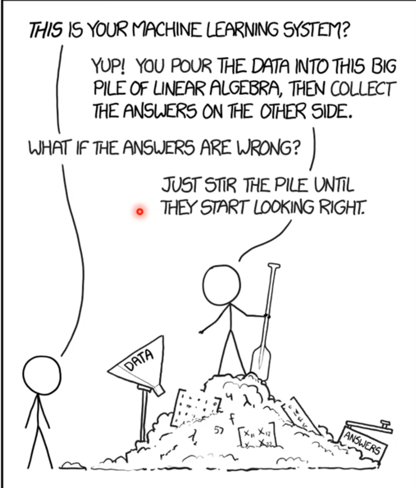
1.1 Interpretable v.s. Powerful
一些模型的解释性是很好的，例如线性模型，但是这种模型的能力较差。深度神经网络很难去解释，就像黑箱一样，但是效果远比线性模型要好。
就像决策树算法的可解释性和效果都很好，所以是不是我们只要使用决策树就可以了？当然不是，因为决策树也可以变得很复杂。就像在打 Kaggle 比赛时，通过不会使用一棵决策树，一般会用随机森林，这时候是很多棵决策树共同决定的结果。
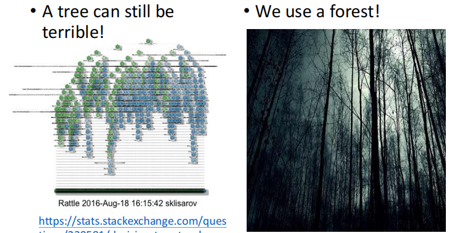
1.2 可解释ML的目标
可解释性一定要完全了解ML模型是如何工作的吗？例如，我们不完全知道大脑是如何工作的，但我们相信人类的决定。
一个好的可解释性就是给人一个理由去相信这么解释是对的，重点是人类能够理解模型是如何运行的。
1.3 可解释性的分类
机器学习模型的可解释性分为局部可解释性和全局可解释性，以下图为例对局部可解释性和全局可解释性进行介绍：
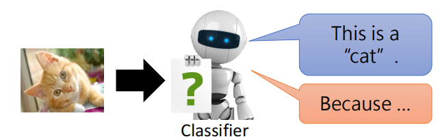
- 局部可解释性：为什么这张图片是一只猫
- 全局可解释性：什么样的图片是一个猫
2 局部可解释性
2.1 可视化模型学到的内容
如何判断哪个 component 是重要的？比如给定一个 ，可以是图像、文本，然后由 构成，接下来把每个 给去掉，看一下模型对于剩下的 能否进行正确的预测。如果去掉一个 后模型的性能下降较多，则说明对于模型来说 这个 component 比较重要。
下图通过对图片中的不同部位进行 mask 后再进行预测的结果，越接近红色则准确率越高，越接近蓝色准确率越低。比如第一个图，可以看到小狗的脸部大多为蓝色，说明把小狗的脸部遮掩之后模型预测出小狗的准确率较低，说明模型是根据脸部来进行分类的。
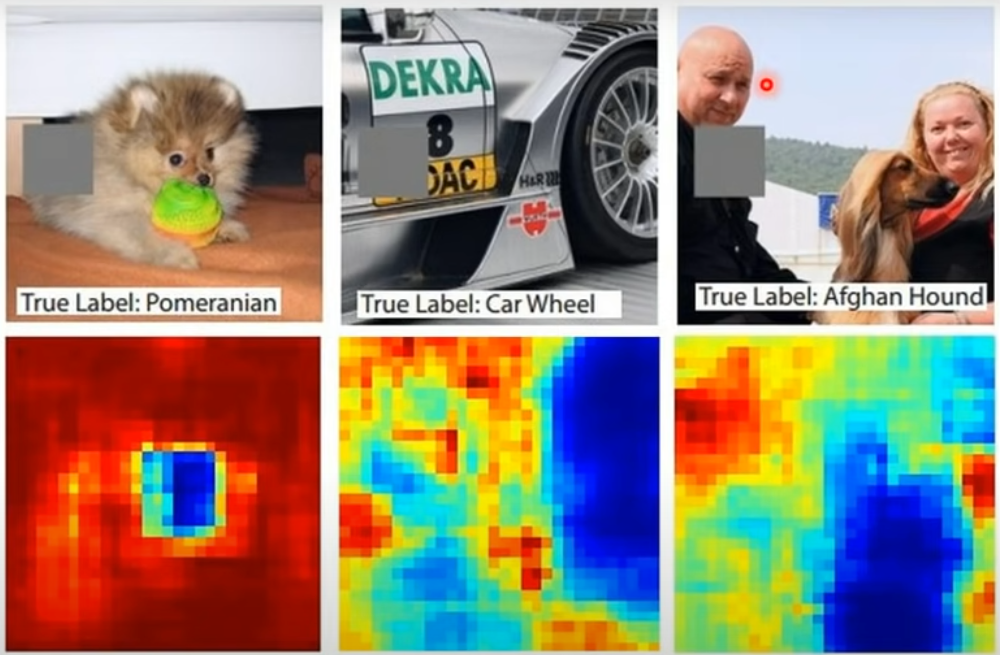
2.1.1 Saliency Map
除了上面对 进行 mask 的方法，也可以计算图像中每个点的梯度，相当于求偏导 ，这个值越高，则显示为白色，否则越接近黑色。
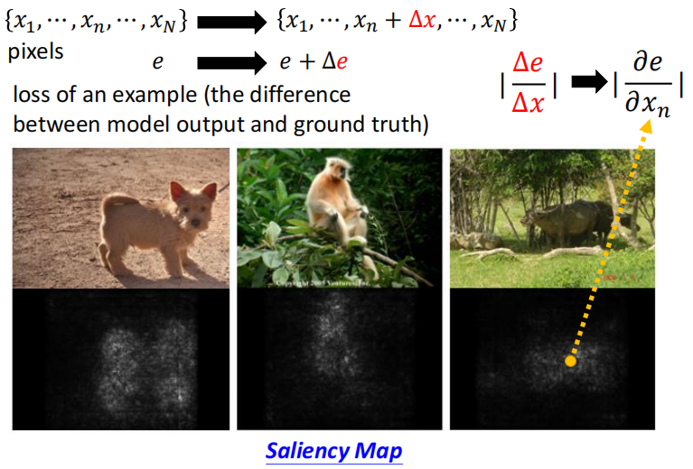
2.1.2 SmoothGrad
使用上面的方法画出来的图叫做 Saliency Map，但是有时候使用 Saliency Map 画出来的图也会有一些杂讯，如下：
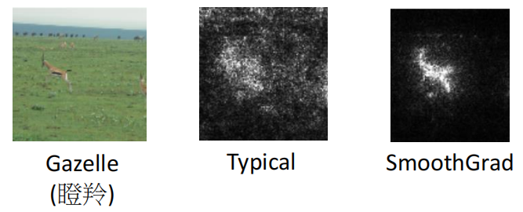
这时候可以使用 SmoothGrad，具体做法是在输入图像中随机添加噪声，得到噪声图像的 Saliency Map 并对其进行平均。可以看到使用 SmoothGrad 方法画出的图比较清晰整洁。
但是只看 Gradient 也不能完全反映一个 component 的重要性。比如，如果通过大象的鼻子来判断是否是一个大象。当鼻子的长度长到一定长度的时候，就算再长，也不会对是不是大象造成很大的影响。
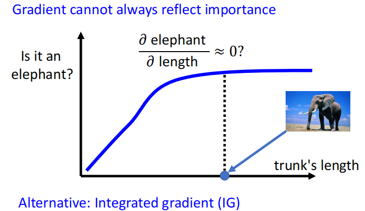
所以只看偏微分有时也不能完全判断一个 component 的重要性，还有一个方法 IG 效果更好，这里不多做介绍。
2.2 模型如何处理输入数据
第一种方法可以通过人眼去观察模型输出的结果，比如可以把隐藏层的输出拿出来，然后降维到 2D，人去观察。
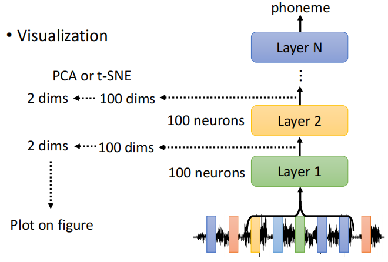
除了人眼观察之外，还有一种技术叫 Probing，是探针的意思。把探针插入到网络中，比如要看一下 Bert 中某一层到底学到了什么东西，可以训练一个分类器（探针），这个分类器是要根据一个向量决定这个词汇它的词性是什么。

如果这个 POS 的分类器正确率高，说明这些 Embedding 里面有很多词性的信息；如果正确率低，则说明没有很多词性的信息。但是有可能因为我们的分类器没有训练好，导致正确率很低，所以要注意区分。
3 全局可解释性
全局可解释性是根据训练好的模型的参数去检查：对这个模型而言，一只猫长什么样。
3.1 学习一个不存在的
如下图所示，每个 CNN 的输出都将是一个特征图，比如 filter 1 负责检测某些 pattern。现在想看一个对于一个 filter 而言，它想要看的 feature map 是什么样的。
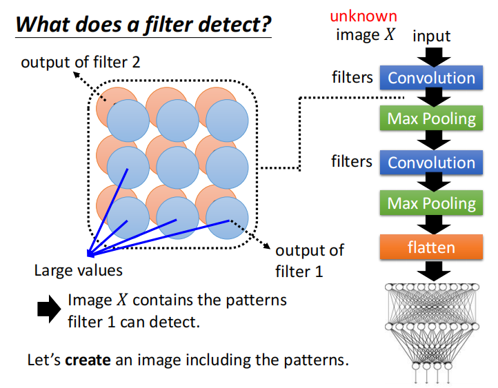
一种做法是可以创建一个包含那些 patterns 的图片。找一个不属于训练集中的图片 ，把其当作一个未知的变量，当作要训练的参数。
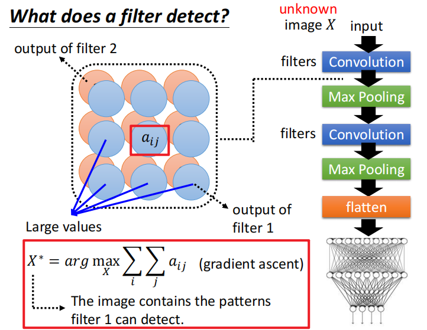
通过把这张图片丢入 Convolution 之后，这个 Convolution 输出的值 越大越好。找出来的这个 记作 。
因为要最大化一个变量，所以可以使用梯度上升。训练好这个 Digit classifier 之后，把每个 filter 对应的 可视化出来：
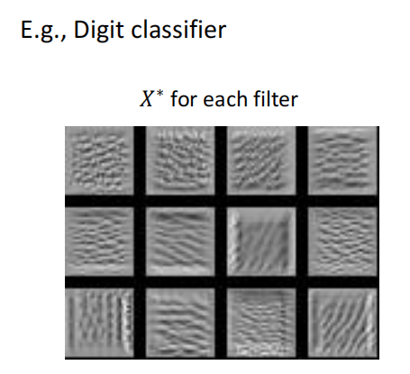
如果直接看最后的 image classifier，可以找一个图片 ，这个图片可以让某一个类别的分数越高越好。
结果如下，例如图片 0 可以让分类器认为图片 0 的概率最高。
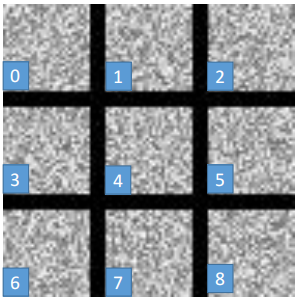
可以发现，人看不懂的一堆杂讯模型认为是不同的数字，所以在求解 的时候，要加上一些限制，即：
在之前公式的基础上增加了 部分，用于衡量 有多像数字。我们希望得到的 中白色的点越小越好。
加上一些额外的限制之后，得到的结果如下，可以发现有一些数字的形状，但是如果要得到很像数字的图形是很难做到的。需要根据你对 object 的理解加很多的限制。
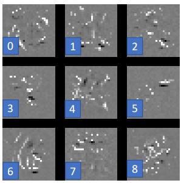
3.2 使用生成器
可以自己训练一个 image generator，之后如何利用这个图片生成器来反推我们之前得到的图片分类器学习到了什么？
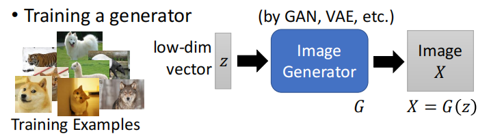
可以把图片生成器和图片分类器拼接到一起：先从一个分布中采集一个数据 ，然后使用图片生成器生成一个图片 ，再将其送入图片分类器（Image Classifier）中得到分类结果 。
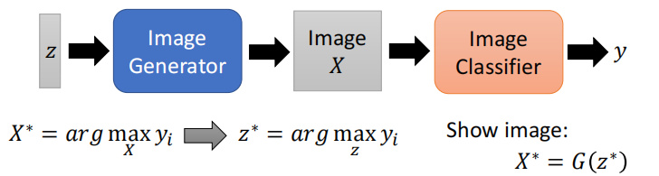
现在有了图片生成器之后，我们就不用找 ，而是在找一个 ，能够让 最好的 记作 。之后把 输入 generator 中显示出这个图片，看一下是什么图形。
产生的让对应的图形分数最高的 如下：
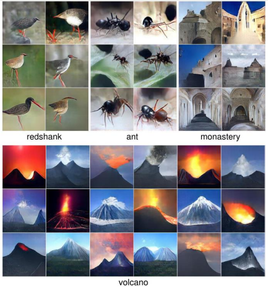
但是往往机器学习的可解释性就是想得到一些符合人们预期和认知的结果，可能实际上模型就是把那些杂讯可以正确的认为是不同的数字，但是只不过人看不懂，导致人们不接受这种解释。
3.3 其他方法
可以用一些简单的模型去模拟一个复杂的模型的行为，如果输出结果相同，则可以使用简单的模型去解释复杂模型的行为。
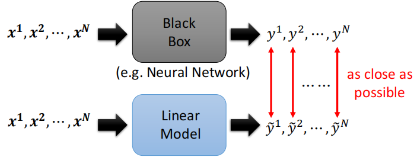
但是黑盒子模型能做到的简单的模型不一定能做到，有一个工作Local Interpretable Model-Agnostic Explanations（LIME）可以让线性模型模仿复杂模型在一小部分区域的行为，这样也可以对复杂模型进行一定程序的解释。
 微信
微信 支付宝
支付宝